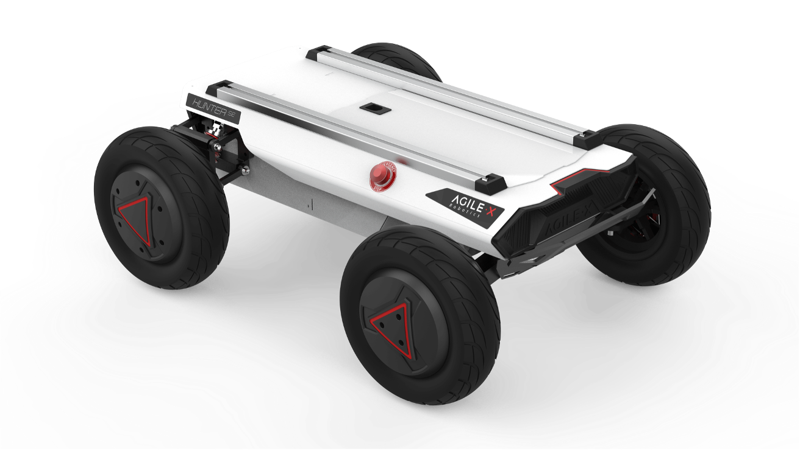

Trimble Agriculture Sponsored Final-Year Project | 2026
Systems Integration • Positioning & Control • Testing & Validation

This five-person final-year project, sponsored by Trimble Agriculture, investigated machine-learning steering control for autonomous agricultural vehicles. The team used an AgileX Hunter SE robot and Trimble NAV960 GNSS/IMU positioning system to develop and physically test steering controllers.
My contribution was the systems integration and testing infrastructure. I developed the connection between the team's simulated controllers and the physical vehicle: integrating the onboard hardware, implementing a modular Python control pipeline, and conducting the testing needed to validate the end-to-end system.
Real-time control loop
Independent CAN interfaces
Controller input features
Physical runs used to assess localisation
I was responsible for systems integration, with additional responsibility for physical testing and validation. Other team members developed the PID and machine-learning controllers; I focused on making them deployable and testable on the actual robot.
Technologies: Python, Linux, NVIDIA Jetson Xavier NX / Orin Nano, CAN & SocketCAN, GNSS/IMU, ONNX Runtime, Git, CSV/JSON logging, robotics simulation.
I integrated the NAV960 positioning module, Jetson onboard computer and Hunter SE vehicle, including regulated power distribution and separate CAN buses. The NAV960 communicates through the Jetson's native CAN controller and an external transceiver at 250 kbit/s; the Hunter SE uses a USB-CAN adapter at 500 kbit/s.
Initial development used a loaned Jetson Xavier NX before moving to a Trimble-owned Orin Nano. The migration required troubleshooting a missing gs_usb kernel driver to restore USB-CAN support. I also implemented consistent CAN interface mapping and startup configuration for headless field operation over SSH.
I developed a modular pipeline that acquires NAV960 measurements, converts the reported position and heading into a local coordinate frame, assembles the controller inputs, and sends steering and velocity commands to the Hunter SE. Sensor acquisition and robot communication run independently of the main 50 Hz control loop, reducing the risk of communication delays interrupting control.
The input builder produces the 46-element feature vector used by the machine-learning models, including reference-path coordinates, velocity, yaw rate and cross-track error. The waypoint-selection and cross-track-error algorithms were developed by a teammate; I integrated them into the physical pipeline and implemented the required frame transformations and controller interface.
The software supports the team's baseline PID controller, neural network controllers loaded through ONNX Runtime, and an open-loop mode for validation. Controller type, model selection, reference path, commanded velocity and logging options are configurable without changing the main pipeline. The Hunter SE API handles CAN control-mode selection, steering/velocity commands, command refresh and vehicle feedback.
I tested the system incrementally, from individual hardware connections and software modules through to complete outdoor vehicle runs. This made it easier to isolate failures before introducing more components into the control loop.
Verified regulated supply voltages, checked CAN transceiver connections, inspected incoming frames with candump, and performed controlled motion tests to confirm that commands and telemetry passed correctly between the Jetson and robot.
I built a NAV960 simulator using a bicycle kinematic model so the downstream software could be tested without the physical sensor. It supported configurable starting position, heading and measurement noise. For simulation-to-hardware comparison, I implemented open-loop step, sine and chirp steering inputs, with chirp tests used extensively to evaluate steering response across frequencies.
Each test run could automatically produce timestamped CSV files covering raw NAV960 measurements, the 46-element controller input, steering output and cross-track error, alongside a JSON file recording the test configuration. A separate validation log captured actual robot steering and velocity for comparison with simulation. These logs helped identify inconsistent GNSS starting poses and a mismatch between controller output units and steering-command units.
I helped deploy and test both PID and reinforcement-learning controllers on the physical Hunter SE. The local coordinate transformation was evaluated over at least 40 physical runs beginning from different positions, with test logs used to compare vehicle trajectories against reference paths and investigate tracking deviations.
The end-to-end integration was successful: live positioning data reached the Jetson, the control pipeline generated steering commands, and both PID and reinforcement-learning controllers were executed on the physical vehicle. On the tested reference path, both controllers followed the overall trajectory, although tracking around turns remained imperfect.
Testing also revealed areas requiring further investigation. The initial localisation procedure could be sensitive to unreliable NAV960 measurements during startup, and the 5 m lookahead used in feature selection was a possible contributor to tracking deviations on tighter curves. These were identified as limitations rather than proven causes of all observed error.
The project gave me hands-on experience with hardware/software integration, real-time sensing and control, repeatable test procedures, data-driven fault investigation and adapting a system when field conditions or hardware dependencies did not behave as expected. The final software architecture was designed to let Trimble test additional controllers without rebuilding the surrounding system.